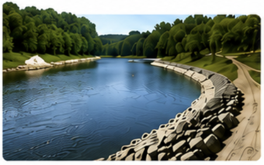
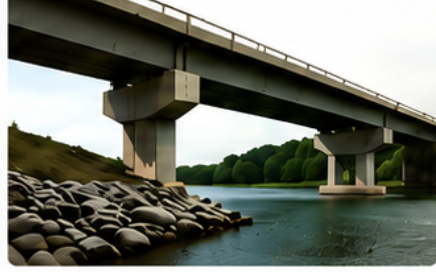
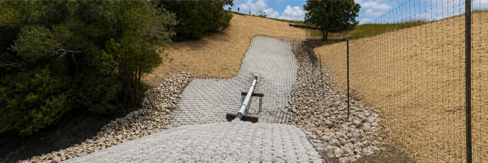
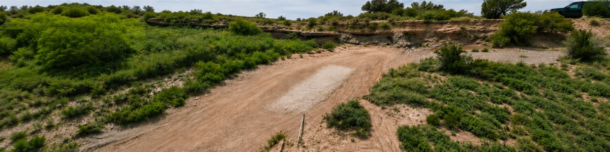

River Bends
Stabilizing migrating banks and protecting adjacent assets.

The world leader in
Er-Con Technologies is solely focused on the survey, design and installation of erosion mitigation and bank stabilization systems.
With over 3,000 completed projects around the world, Er-Con brings proven performance to demanding environments.
Proven experience. Nationwide impact.
From streams and rivers to lakes and bays, Er-Con combines proven engineering, proprietary systems and unmatched field experience to provide long-lasting solutions that protect infrastructure, property and natural resources.
Our work spans exposed pipeline remediation, bank stabilization, channel restoration, bridge protection and other complex erosion-control challenges.
See the work →Stabilizing migrating banks and protecting adjacent assets.

Correcting exposure and restoring reliable support.

Protecting crossings, bridges and surrounding property.

From design through construction and final stabilization.

For premier erosion control services
One team from early investigation through installation.
Field investigation and site information that establish the foundation for sound solutions.
Practical engineering and construction documents built around the conditions in the field.
Support for environmental review, applications, agency coordination and compliance.
Define objectives, risks, alternatives, project boundaries and the path forward.
Coordinated field execution with attention to safety, quality and long-term performance.
Integrated systems designed to manage flow, stabilize banks and protect valuable assets.
Engineering + field execution
Er-Con’s value is in connecting the technical work to what can actually be built in the field. The result is a clearer path from investigation and permitting through installation.
Our projects
Selected examples of erosion-control and stabilization work.



Exposed pipeline issues? Erosion concerns?
Whether onshore or offshore, Er-Con Technologies erosion-control services are proven to protect your assets.